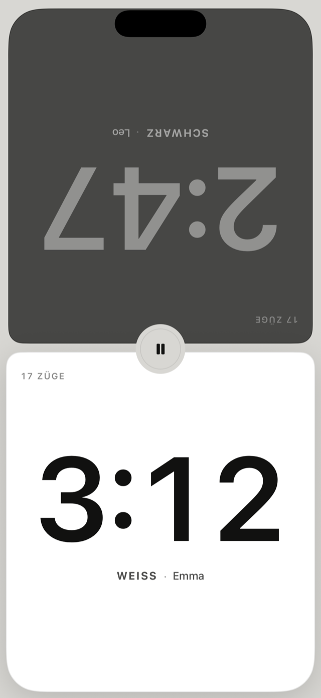

Eine Schachuhr.
Sonst nichts.
Leg dein iPhone neben das Brett. Tippe nach deinem Zug auf deine Hälfte. Mehr musst du nicht wissen.
Bald im App Store.

Zwei große Hälften
Jede Seite gehört einem Spieler. Nach deinem Zug tippst du irgendwo auf deine Hälfte, und die Uhr wechselt sofort.
Farben wie auf dem Brett
Weiß ist hell, Schwarz ist dunkel. Die obere Hälfte steht auf dem Kopf, damit dein Gegenüber sie richtig liest.
Auf die Millisekunde
Tempo rechnet mit Zeitstempeln der monotonen Uhr, statt Sekunden zu zählen. In den letzten zehn Sekunden zeigt es Zehntel.
Alle Bedenkzeiten
Bullet bis klassisch, Fischer-Inkrement, Verzögerung, unterschiedliche Zeit pro Spieler und Zusatzzeit nach einer Zugzahl.
Hilfe & Kontakt
Fragen, Ideen oder ein Fehler? Schreib mir: lenn@gahlert.net
Was passiert, wenn etwas dazwischenkommt?
Während einer Partie bleibt der Bildschirm an. Wird die App trotzdem unterbrochen – etwa durch einen Anruf –, rechnet Tempo mit der monotonen Uhr des Geräts weiter: Die laufende Zeit stimmt danach exakt. Und wird die App beendet, kannst du die Partie beim nächsten Start fortsetzen.
Wo werden meine Partien gespeichert?
Nur auf deinem Gerät. Tempo hat keine Konten und sendet nichts ins Internet.
Wie stelle ich die Sprache um?
Tempo folgt der Systemsprache. Du kannst sie für Tempo allein unter Einstellungen › Apps › Tempo › Sprache ändern.
Läuft Tempo auch auf dem iPad?
Ja, auf iPhone und iPad, hoch und quer, hell und dunkel. Im Querformat liegen die Hälften nebeneinander wie bei einer Turnieruhr.